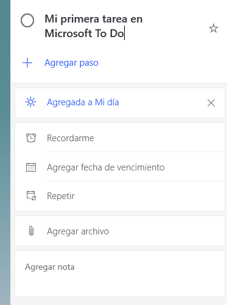

Microsoft To-Do
Manual de Usuario
Versión: 1.0
Fecha: 22/01/2020
Queda prohibido cualquier tipo de explotación y, en particular, la reproducción, distribución, comunicación pública y/o transformación, total o parcial, por cualquier medio, de este documento sin el previo consentimiento expreso y por escrito de Tecnóloga Tritech.
Para la navegación por el manual de usuario puede consultar la sección de la página de contenido y dirigirse a la parte de la explicación de la aplicación en la que necesite información respecto a su uso pulsando sobre el texto que lo indica en la página de contenido.
Página de contenido
Guía de usuario
Introducción
Microsoft To Do es una lista de tareas pendientes, simple e inteligente, que le ayuda a administrar todas las tareas en un solo lugar. Puede trabajar con las tareas para el día de mi día y crear cualquier número de listas adicionales para organizar el trabajo, las comestibles, los viajes, las compras, las películas que se deben vigilar.
Puede agregar tantas tareas como desee a cada lista. Para mantener todo en seguimiento, establezca fechas de vencimiento y recordatorios para cada tarea y protagonista las tareas más importantes. Use los pasos para dividir las tareas más grandes en secciones y notas más manejables para grabar detalles adicionales. Puesto que todas sus tareas se almacenan en servidores de Exchange Online, también aparecerán de forma automática en las Tareas de Outlook.
Iniciar sesión
Lo primero que tenemos que hacer es iniciar sesión si ya tenemos cuenta o registrarnos para poder utilizar todas las ventajas de tener compartido los datos de cada lista en cada dispositivo que tengamos instalada la aplicación.
Introducimos nuestro correo electrónico.
Introducimos la contraseña.
Elegimos la opción que más nos interese.
Una vez iniciada la sesión nos aparecerá la ventana principal de Microsoft To Do.

Mi día y sugerencias
Use mi día para centrarse en las tareas diarias. Puede agregar nuevas tareas directamente a mi día o agregar tareas de otras listas seleccionando una tarea para ver sus detalles y, a continuación, seleccionando Agregar a mi día. También puede usar sugerencias para seleccionar tareas para agregarlas a mi día. Para ver las tareas sugeridas, seleccione el icono de sugerencias en la parte superior de la lista mi día.
La lista inteligente mi día se restablece todas las noches, por lo que tendrá una pizarra en blanco para agregar las tareas que desee realizar cada día. Las tareas de mi día que no se hayan completado antes de que se reestablezca la lista se guardarán en la lista de tareas y se incluirán en las sugerencias el día siguiente.
Crear, editar, eliminar y restaurar tareas
Crear una tarea
Puede crear una tarea en el campo + Agregar una tarea de entrada en cualquiera de las listas. Seleccione el campo, escriba el título de la tarea y presione retorno o entrar. Entonces, la tarea nueva se agregará a la parte inferior de la lista.
Editar una tarea
Para cambiar el nombre de una tarea, seleccione la tarea para abrir su vista de detalles. Una vez en la vista de detalles, puede hacer clic o pulsar en el título de la tarea. Aparecerá un cursor en el campo título de la tarea y podrá cambiarle el nombre o editarlo.
Eliminar una tarea
Para eliminar una tarea, seleccione el icono de papelera en la esquina inferior derecha de la vista de detalles de la tarea. O bien, si ha activado menús contextuales en la configuración, puede hacer clic con el botón derecho y seleccionar liminar tarea seleccionada si se encuentra en el escritorio. En Android e iOS, puede deslizar el dedo de derecha a izquierda para eliminar.
Restaurar una tarea eliminada
Puesto que sus tareas se almacenan en Exchange Online y también son visibles en las Tareas de Outlook, puede recuperar las tareas que haya eliminado por accidente en Outlook.
- Inicie sesión en Outlook en el escritorio con la misma cuenta de Microsoft que usa con Microsoft To Do.
- Vaya a la lista de carpetas de correo electrónico y seleccione elementos eliminados.
- Busque la tarea eliminada, haga clic en ella con el botón secundario y, a continuación, seleccione mover > otra carpeta > tareas.
Solucionar problemas
Cambios en el acceso de Microsoft To Do para las cuentas de Exchange locales
A partir del 22 de enero de 2021, todos los usuarios de To Do o la aplicación Tareas de Teams con un buzón local solo podrán iniciar sesión en To Do en la web. No podrá iniciar sesión en To Do en Android, iOS, Mac o Windows. En To Do en la web, podrá ver las listas y tareas, pero no se guardará todo lo que edite o agregue.
A partir del 22 de febrero de 2021, todos los usuarios con un buzón local no podrán iniciar sesión en To Do en ninguna plataforma. Asegúrese de hacer una copia de seguridad de los datos de To Do antes. Puede imprimir las listas o guardarlas como archivos PDF. Una vez que su organización haya movido su buzón a la nube, podrá iniciar sesión en To Do y volver a escribir manualmente la información que guardó.
Preguntas frecuentes
¿Por qué recibo el mensaje de error "Lo sentimos, pero no es posible iniciar sesión ahora mismo"?
Cuando intenta iniciar sesión en Microsoft To Do con una cuenta profesional y aparece el mensaje de error:
"Lo sentimos, pero no es posible iniciar sesión ahora mismo. Inténtelo de nuevo y póngase en contacto con el soporte técnico si el problema persiste"., junto con un código de error, como:
AadUnknownError
0x80070520
0xc0292007
o algo parecido, pruebe lo siguiente:
- Vaya a Configuración de Windows > Actualización y seguridad > Buscar actualizaciones de Windows
- Intente reiniciar el equipo PC o dispositivo móvil
Después, intente iniciar sesión en Microsoft To Do de nuevo. En la mayoría de los casos, esto debería ayudar a resolver el problema. En caso de que el error persista, envíenos un mensaje aquí.
¿Por qué recibo el mensaje de que mi licencia de to do está deshabilitada?
Su plan deMicrosoft 365 incluye licencias de nivel de usuario para Microsoft To Do, que su administrador puede usar para administrar el acceso individual a las aplicaciones de To Do. Si su administrador ha optado por deshabilitar su licencia paraMicrosoft To Do, incluso temporalmente, no podrá usarla. Si cree que ha recibido este mensaje por error o desea obtener más información sobre cómo obtener acceso a Microsoft To Do, póngase en contacto con su administrador de TI para obtener ayuda.